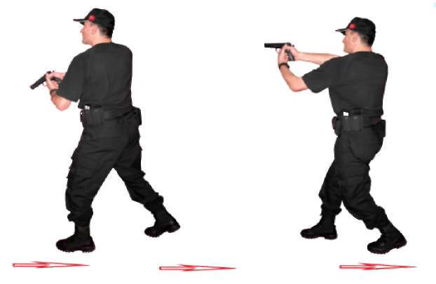
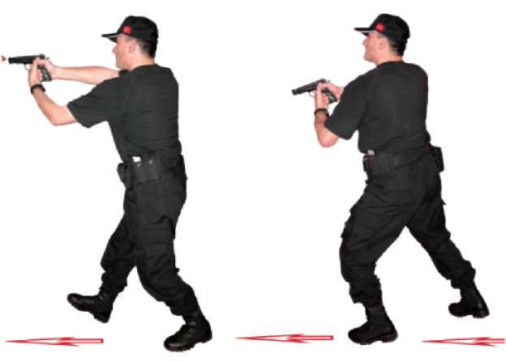
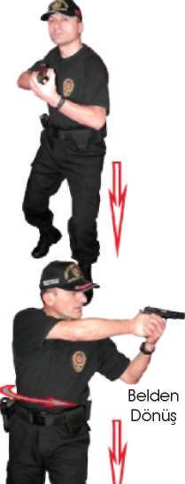
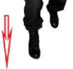
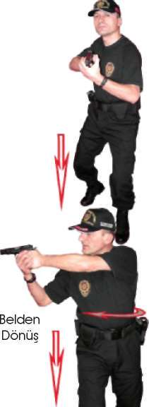
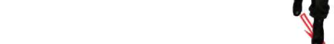
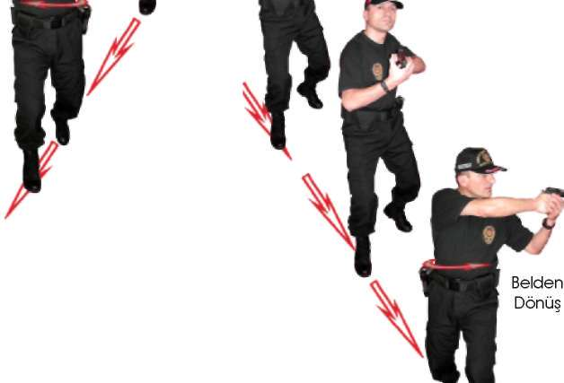
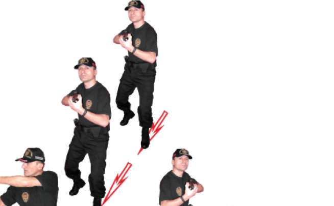

Yürüme hızı hedefin vurulabileceği bir hızda olmalıdır.
3. Hareket 4. Hareket
Resim-9) Yürürken Şarjör Değiştirme Tekniği 1.7.4. İleri Yürürken Öndeki Hedeflere Doğru Hareket Hâlinde Atış
Tekniği
Atıcı önce tabancayı normal doldurup ileriye doğru yürüme pozisyonu alır.
Çift elle kavranan tabanca hedefe doğru nişan hattının altında, kollar hafif kırık 78


BÖLÜM
İLERİ SEVİYE ATIŞ TEKNİKLERİ
pozisyonda tutulur. Her atış komutunda tabanca yukarı kaldırılıp atış yapıldıktan sonra tekrar eski pozisyona geçilir. Yürürken veya yürüme esnasında atış yapılırken gözler sürekli hedefi gözlemelidir. Ayrıca yürüme hızı hedefin vurulabileceği bir hızda olmalıdır. Bununla beraber atış hızı yakın mesafelerdeki hedeflere hızlı, uzak mesafelerdeki hedeflere ise yavaş olmalıdır. (Bakınız Resim-10.a) 1. Hareket 2. Hareket
Resim-10.a) İleri Yürürken Öndeki Hedeflere Doğru Hareket Hâlinde Atış Tekniği 1.7.5. Geriye Doğru Yürürken Öndeki Hedeflere Doğru Hareket Hâlinde Atış Tekniği
İleriye doğru yürüme tamamlandıktan sonra verilen geriye doğru yürüme komutuyla, atış pozisyonu bozulmadan geriye doğru yürüme tekniğine geçilir.
Bu durumdayken yürüme ve atış hızı ayarlanarak hedeflere doğru atış yapılır.
(Bakınız Resim-10.b)
1. Hareket 2. Hareket
Resim-10.b) Geriye Doğru Yürürken Öndeki Hedeflere Doğru Hareket Hâlinde Atış Tekniği 79



1.7.6. Hedeflere Paralel Yürürken Sağ ve Sol Yönden Çıkan Hedeflere Hareket Hâlinde Atış Teknikleri
Önce tabancanızı normal olarak doldurup hedefleri sağ paralelinize alarak ileriye doğru yürüme tekniğine geçin. Dikkatinizi hedeflere toplayın. Başka hedeflerin çıkması muhtemel alanları da kontrolünüzde bulundurun. Verilen her atış komutunda el ve kol pozisyonlarınızı bozmadan, vücudunuzun bel kısmından dönerek sağ yönünüzde bulunan size en yakın veya tehlike arz eden hedeflere atış yapın. Tekrar öne yürüme pozisyonuna geçerek öne doğru yürümeye devam edin. Tekrarlanan her atış komutunda bu atış tekniğini tekrarlayın. Ayrıca ters yönden yürüyerek hedeflerinizi sol paralelinize alın ve aynı atış tekniğini sol yöndeki hedeflere doğru yapın. Bu teknikte yürüme hızı, hedeflere isabet ettireceğiniz bir hız olmalıdır. (Bakınız Resim-10.c) Sağ Yöne
Sol Yöne
Atış
Atış
Resim-10.c) Hedeflere Paralel Yürürken Sağ ve Sol Yönden Çıkan Hedeflere Hareket Hâlinde Atış Teknikleri
1.7.7. Hedeflere Çapraz Yürürken Sağ ve Sol Yönden Çıkan Hedeflere Hareket Hâlinde Atış Teknikleri
Hedeflere teğet yürürken uzak mesafeden yakın mesafeye doğru oluşturduğunuz teğet üzerinde tabancanızı normal doldurun. İleriye doğru yürüme tekniğine geçerek hedeflerinizi sağ yöne alın. Hedeflere teğet yürürken. Dikka-80




BÖLÜM
İLERİ SEVİYE ATIŞ TEKNİKLERİ
tinizi hedeflere toplayın, başka hedeflerin çıkması muhtemel alanları da kontrolünüzde bulundurun. Verilen her atış komutunda el ve kol pozisyonlarınızı bozmadan, vücudunuzun bel kısmından dönerek sağ yönünüzde bulunan size en yakın veya tehlike arz eden hedeflere atış yaparak tekrar yürümenize devam edin. Her tekrarlanan atış komutunda bu atış tekniğini tekrarlayın. Ayrıca ters yönden yürüyerek hedeflerinizi sol paralelinize alın ve aynı atış tekniğini sol yöndeki hedeflere doğru yapın. Bu teknik ile hedeflere, uzak mesafeden yakın mesafeye doğru atış yapılmaktadır. Bundan dolayı yürüyüş hızınıza orantılı olarak hedeflere uzak mesafelerden atış hızını düşürerek, yakın mesafelerden de atış hızını artırarak atış yapmalısınız. (Bakınız Resim-10.d) V \
Belden
Dönüş
Sağ Yöne
Atış
Sol Yöne
Atış
Resim-10.d) Hedeflere Çapraz Yürürken Sağ ve Soldan Çıkan Hedeflere Hareket Hâlinde Atış Teknikleri